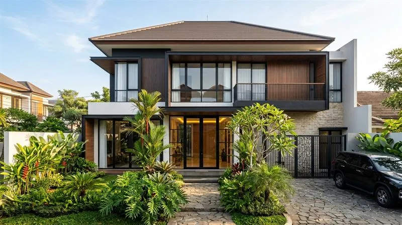
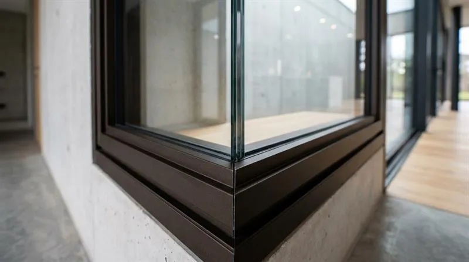

Perbandingan Kusen Aluminium Alexindo vs YKK AP di Blimbing: Mana Lebih Bagus?

📌 Ringkasan Inti
Kusen aluminium Alexindo dan YKK AP di Blimbing berbeda dari sisi ketebalan profil, presisi sambungan, dan segmen harga. Alexindo lebih cocok untuk kebutuhan hunian standar beranggaran rasional, sedangkan YKK AP diarahkan untuk hasil arsitektural yang lebih presisi dan bentang lebar.
- Alexindo umumnya tersedia dalam ketebalan profil 3 inch dan 4 inch dengan harga yang sangat kompetitif.
- YKK AP lebih sering dipakai pada spesifikasi tebal 4 inch (1.35 mm) dengan sambungan miter sudut 45 derajat yang ekstra presisi.
- Pemilihan merk sebaiknya disesuaikan dengan dimensi bentang kaca dan beban bukaan pintu atau jendela.
- Kawasan Blimbing sebagai koridor padat hunian dan ruko bisnis membutuhkan kusen yang kokoh serta tahan getaran jalan raya.
- Keahlian perakitan dan pemasangan teknisi tetap menjadi penentu utama kekedapan kusen terhadap rembesan air dan debu.
- Tabel Perbandingan Kusen Aluminium Alexindo vs YKK AP
- Apa Itu Kusen Aluminium Alexindo dan YKK AP
- Perbedaan Utama Alexindo dan YKK AP di Blimbing
- Merk Kusen Aluminium Mana yang Cocok untuk Rumah di Blimbing
- Berapa Kisaran Harga Kusen Aluminium Alexindo dan YKK AP
- Kesalahan Umum Saat Memilih Merk Kusen Aluminium
- Kesimpulan Praktis Pemilihan Kusen
Memilih antara kusen aluminium Alexindo Blimbing atau profil premium YKK AP sering menjadi pertimbangan utama pemilik hunian maupun kontraktor ruko di kawasan Blimbing Kota Malang. Kedua merek ternama ini memiliki profil kekuatan, ketebalan, serta segmen harga yang berlainan.
Kawasan Blimbing yang berkembang pesat sebagai pusat perdagangan, perkantoran, dan perumahan modern menuntut pemilihan material yang tepat. Kusen harus mampu meredam kebisingan lalu lintas jalan protokol seperti Jl. Borobudur dan Jl. Ahmad Yani, sekaligus tahan terhadap paparan cuaca Malang tanpa melengkung.
Tabel Perbandingan Kusen Aluminium Alexindo vs YKK AP
Untuk memudahkan evaluasi spesifikasi sebelum menentukan pesanan fabrikasi, berikut rangkuman komparasi teknis antara profil Alexindo dan YKK AP:
| Aspek Pembanding | Kusen Aluminium Alexindo | Kusen Aluminium YKK AP |
|---|---|---|
| Ketebalan Profil Standar | 3 inch (~1.05 mm) & 4 inch (~1.15 mm) | 4 inch (~1.35 mm – 1.40 mm) |
| Segmen Pasar | Menengah (Middle-class) & Proyek Perumahan | Premium & Bangunan Komersial High-End |
| Pilihan Finishing Warna | Powder Coating (Putih, Hitam, Cokelat, Urat Kayu) & Anodize | Anodized Halus Khas YKK (Silver, Gloss Brown, Hitam) & PC Premium |
| Tingkat Kerapatan Sudut Miter | Sangat baik dengan perakitan spigot presisi | Sangat tinggi, sudut siku 45° ekstra rapat tanpa celah |
| Kisaran Estimasi Harga | Lebih Ekonomis (Rp 95.000 – Rp 145.000 / m¹) | Segmen Atas (Rp 180.000 – Rp 280.000 / m¹) |
| Kesesuaian Bangunan Blimbing | Rumah tinggal 1–2 lantai, kos-kosan, sekat ruang | Ruko etalase kaca besar, fasad gedung, villa mewah |
Apa Itu Kusen Aluminium Alexindo dan YKK AP
Alexindo dan YKK AP adalah dua merk profil aluminium ekstrusi yang umum dipakai untuk kusen pintu dan jendela di kawasan Blimbing Malang. Keduanya berfungsi sebagai rangka penopang kaca, panel aluminium, atau daun pintu pada rumah tinggal maupun bangunan komersial.
Alexindo dikenal luas sebagai pilihan aluminium kelas menengah dengan ketebalan umum 3 inch dan 4 inch, sangat populer untuk rumah tinggal dengan anggaran terukur tanpa mengorbankan estetika. Di sisi lain, YKK AP diposisikan pada segmen premium dengan densitas billet aluminium murni berstandar Jepang, sering dipilih untuk bukaan kaca bentang lebar dan gedung dengan standar arsitektur ketat.

Perbedaan Utama Alexindo dan YKK AP di Blimbing
Perbedaan mendasar antara kedua merek ini terletak pada ketebalan daging profil, presisi sambungan sudut, dan karakter lapisan finishing permukaan:
- Ketebalan Dinding Profil Aluminium: Kusen Alexindo memiliki ketebalan rata-rata 1.05 mm hingga 1.15 mm, sementara YKK AP memiliki ketebalan profil 1.35 mm hingga 1.40 mm yang memberikan kekakuan struktural lebih tinggi saat menahan beban kaca tempered tebal.
- Presisi Sambungan Miter 45 Derajat: Profil YKK AP memiliki toleransi pemotongan yang sangat ketat, menghasilkan sambungan siku yang sangat rata dan minim celah mikro saat dirakit menggunakan spigot orisinal.
- Daya Tahan Finishing Anodizing: Anodizing YKK AP memiliki lapisan oksida yang sangat tahan gores dan tidak mudah pudar oleh radiasi matahari, sedangkan Alexindo sangat unggul dalam ragam pilihan warna powder coating modern seperti motif kayu dan putih mutiara.
- Bobot Keseluruhan: Kusen YKK AP lebih berat per meter lari dibanding Alexindo, menuntut perkuatan dynabolt yang lebih solid pada dinding bata ringan atau beton.
Paket Pasang Kusen Aluminium Alexindo & YKK AP Blimbing
Dapatkan penawaran harga per meter transparan untuk hunian atau ruko Anda di Blimbing. Meliputi survei lokasi bebas biaya, pemotongan miter 45° mesin gergaji double mitre presisi, dan kartu garansi resmi.
Merk Kusen Aluminium Mana yang Cocok untuk Rumah di Blimbing
Untuk rumah tinggal standar di Blimbing, Alexindo dengan ketebalan 3 inch umumnya sudah memadai untuk kebutuhan jendela dan pintu berukuran normal. Untuk rumah atau ruko dengan desain bukaan lebar atau kaca besar, YKK AP 4 inch lebih disarankan agar rangka tetap kokoh.
Blimbing sebagai kawasan padat yang banyak dilalui lalu lintas membuat kebutuhan kusen aluminium bervariasi, mulai dari rumah tinggal di area perumahan tenang seperti Pandanwangi atau Polowijen, hingga deretan ruko komersial di sepanjang koridor Jl. Ahmad Yani dan Jl. Sunandar Priyo Sudarmo. Penyesuaian ketebalan profil dengan fungsi bangunan menjadi kunci utama sebelum memilih merk.
Berapa Kisaran Harga Kusen Aluminium Alexindo dan YKK AP
Harga kusen aluminium Alexindo umumnya lebih rendah dibandingkan YKK AP untuk ketebalan yang setara, karena posisinya di segmen standar hingga menengah. Harga pasti dapat bervariasi tergantung volume pemesanan, warna coating, dan tingkat kesulitan medan pemasangan di Blimbing.
Faktor yang memengaruhi harga akhir antara lain ketebalan profil (3 inch vs 4 inch), jenis finishing warna (anodize vs powder coating khusus), jumlah meter lari yang dipesan, serta kelengkapan aksesoris seperti engsel friction stay stainless steel dan kunci jendela multi-point lock. Sebaiknya calon pembeli meminta rincian Rencana Anggaran Biaya (RAB) per meter lari secara tertulis agar tidak ada biaya tersembunyi saat pemasangan di lokasi.
"Baik Alexindo maupun YKK AP adalah pilihan yang sangat solid jika dikerjakan oleh aplikator yang tepat. Kunci kekedapan suara dan anti-bocor bukan hanya pada profilnya, melainkan pada ketepatan sudut potong miter 45 derajat serta ketelitian injeksi sealant silikon netral pada perimeter dinding."
Kesalahan Umum Saat Memilih Merk Kusen Aluminium
Kesalahan paling umum adalah memilih merk hanya berdasarkan harga termurah tanpa memeriksa ketebalan profil yang sesuai kebutuhan bukaan. Ketebalan yang terlalu tipis untuk bentang kaca lebar berisiko membuat kusen melengkung akibat tekanan angin kencang atau beban kaca itu sendiri.
Kesalahan lain adalah mengabaikan kualitas karet seal dan sealant silikon pada sambungan, padahal komponen inilah yang paling sering menjadi biang keladi kebocoran air saat musim hujan tiba di Kota Malang. Selain itu, menggunakan profil aluminium non-merk (KW) tanpa jaminan sertifikasi mutu sering berakhir dengan pudarnya warna dalam kurun waktu kurang dari dua tahun.
Kesimpulan Praktis Pemilihan Kusen
Kusen aluminium Alexindo sangat cocok untuk rumah tinggal keluarga dengan anggaran terukur dan menginginkan variasi warna menarik. Sementara itu, YKK AP menjadi opsi terbaik untuk bukaan kaca besar, etalase ruko komersial, atau bangunan yang memprioritaskan kekakuan profil dan prestise arsitektur di Blimbing.
Pastikan Anda selalu berkonsultasi dengan aplikator resmi bersertifikasi untuk mendapatkan survei lokasi akurat dan estimasi biaya transparan sebelum memulai renovasi rumah.
Pertanyaan Seputar Kusen Alexindo vs YKK AP di Blimbing
Sangat kuat dan memadai. Alexindo dengan ketebalan standar 1.05 mm hingga 1.15 mm mampu menopang beban bukaan jendela lantai dua standar dengan sangat baik asalkan dikombinasikan dengan pemasangan dynabolt dan sealant berkualitas.
Tidak selalu lebih unggul untuk semua skenario. YKK AP memang unggul dalam hal ketebalan profil (1.35 mm), presisi sudut miter, dan daya tahan finishing anodize kelas satu, namun untuk proyek rumah tinggal dengan anggaran terukur, Alexindo memberikan rasio biaya berbanding performa yang jauh lebih ekonomis.
Kedua merek resmi dapat dipesan langsung melalui workshop aplikator terpercaya KUSEN ALUMINIUM Malang dengan layanan survei lokasi gratis, pengukuran presisi, dan jaminan kartu garansi pemasangan untuk wilayah Blimbing dan sekitarnya.